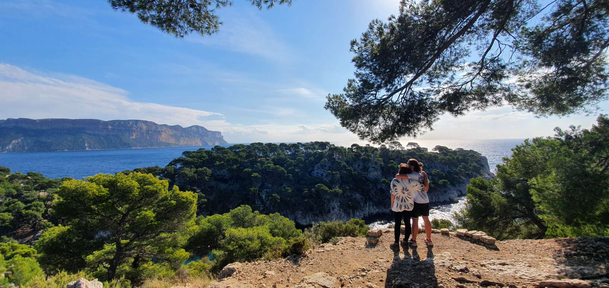
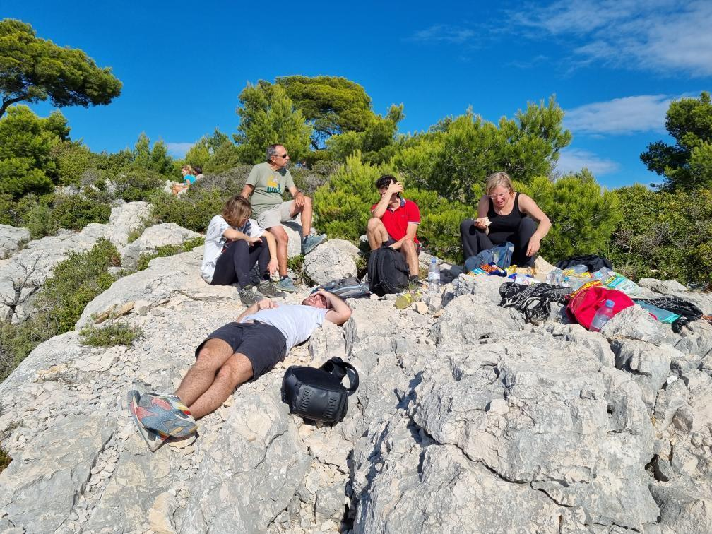

RANDONNEE AUX CALANQUES DE CASSIS

Le Lieu

Le Lieu
Situé à proximité de la ville charmante de Cassis, ce lieu est magique, même pour
un local les paysages restent époustouflants. On redécouvre la grandeur de notre région.
Une fois une place trouvée (ce qui n'est pas simple), un long et épais chemin mène vers
les plus petits sentiers qui s'offrent à votre choix. Personellement, nous avions choisi le chemin
le plus long et difficile. Objectif : Les crêtes d'En vau, Belvédère où l'Archipel de Riou est visible.
Archipel de Riou
On aperçoit au loin l'Archipel de Riou, je sors alors mon appareil photo
pour capturer quelques souvenirs. On arrive aussi à voir sur les falaises
un groupe de grimpeurs, on les admire quelques moments avant de s'arréter pour manger.

On aperçoit au loin l'Archipel de Riou, je sors alors mon appareil photo
pour capturer quelques souvenirs. On arrive aussi à voir sur les falaises
un groupe de grimpeurs, on les admire quelques moments avant de s'arréter pour manger.
Pause repas

Pause repas
Assis sur la crête où l'on aperçoit l'Archipel, une bonne pause est nécessaire.
Après plusieurs heures de marche en dénivelé (les crêtes sont plutôt hautes),
tout le monde s'assoit et prend sa pause repas : saucisson, sandwich, salade...
© 2021 Copyright:
PROJET CANADA!